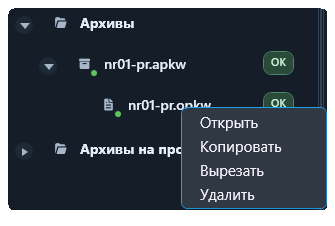

Операции с файлами архива
Выберите программу в дереве или таблице «Файлы архива». В нижней панели отображается её содержимое для чтения и кнопки доступных действий. Команды зависят от того, выбран обычный файл архива или файл из «Архивов на проверке».
Файлы обычного архива
| Действие | Результат и условия |
|---|---|
| Копировать | Запоминает выбранную программу во внутреннем буфере архивов. Исходная запись сохраняется. |
| Вырезать | Подготавливает перенос в другой архив. Исходная запись удаляется только после успешной вставки. Нужны права изменения. |
| Вставить | Вставляет программу в выбранный архив или архив выбранного файла. Доступно при заполненном буфере и наличии прав изменения. |
| Конвертировать в PKW | Сохраняет отображаемый текст отдельным файлом .pkw.
Архивная запись остаётся на месте. Действие находится в панели файла. |
| Запустить в исполнителе | Открывает временную копию программы в редакторе и вызывает команду запуска. Если автоматический запуск не удался, приложение сообщает об этом и предлагает использовать «Выполнение → Запуск». |
| Удалить файл | Удаляет запись из архива после подтверждения. Нужны права изменения. |

Как скопировать или перенести программу
- Выберите файл исходного архива и нажмите «Копировать» или «Вырезать».
- Выберите другой архив либо файл в нём.
- Нажмите «Вставить». Для копирования исходная запись сохраняется; для переноса удаляется после успешной вставки.
Вставка в тот же архив не поддерживается. Если в целевом архиве уже есть запись с таким именем, операция завершается сообщением об ошибке без замены существующей записи. Внутренний буфер предназначен для обмена между архивами, а не для вставки текста из Windows.
Файлы из «Архивов на проверке»
- Открыть файл в текстовом редакторе — открывает рабочий файл отдельно от предварительного просмотра. Внесённые изменения нужно сохранить перед повторной проверкой.
- Проверить файл ещё раз — повторяет трансляцию сохранённого текста и обновляет число ошибок.
Если ошибок нет, рядом формируется файл
.opkw; при ошибках такой результат удаляется. Сам файл остаётся в разделе проверки. - Удалить файл — требует прав изменения и подтверждения.
Для файлов на проверке кнопки копирования, вырезания, вставки, конвертации в PKW и запуска в исполнителе не отображаются. Для проверки всех файлов выберите сам архив и нажмите «Проверить все файлы ещё раз».
Права доступа
Создание, добавление, вырезание, вставка и удаление доступны администратору и разработчику ПК. Регулировщик может просматривать и копировать файлы, импортировать готовые архивы и сохранять архивы на диск, но не изменять их содержимое.
Обычный выбор файла открывает только предварительный просмотр. Запуск в исполнителе выполняется отдельной командой. Предварительный просмотр внутри вкладки архива не предназначен для редактирования.